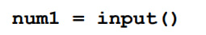
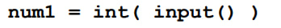
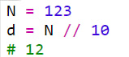
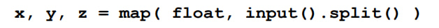
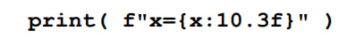

Программа выведет значение переменной a
Присвоить значение переменной a
Чтобы ввести значение переменной используем функцию input
Чтобы работать только с числами испльзуем функцию int
Применяем функцию map, чтобы вызвать фукцию int к кажой части, после разбиения введённой стрки на части
Вычисляет остаток от деления числа на 10
При деление числа на 10 "отбрасывает" последнюю цифру числа
Ввод вещественного числа с клавиатуры
Ввод вещественных чисел в одной строке
Чтобы вывести определённое количество чисел после запятой применяем данный метод, где 10.3 означает 10 позиций из них 3 на дробную часть